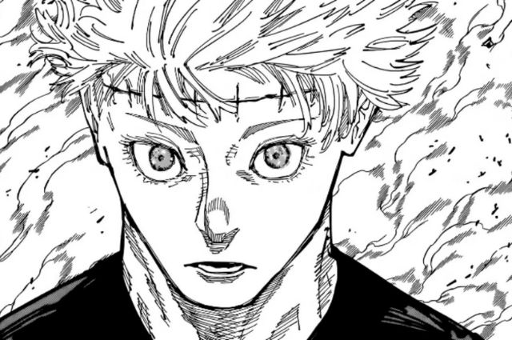

Gojo ou Yuta?
postado 26/05/2024 O Capítulo 261 de Jujutsu Kaisen nos mostrou uma reviravolta digna de filme do oscar. Após Sukuna ter (até então) matado Satoru Gojo, Yuta fez uma das jogadas mais inusitadas do mangá, utilizou a sua técnica para adquirir as habilidades de Kenjaku e controlar o corpo de Gojo, conseguindo assim ter uma chance de acabar com o mestre das maldições. Será que Gojo conseguirá voltar a vida após Yuta sair de seu corpo?
Leia MaisAnimação Digna
postado 18/05/2024Depois de muito tempo com o anime original ter parado, e com uma adaptação horrorosa, Berserk: The Black Swordsman receberá uma animação digna de sua grandeza. A animação está sendo feita pelo fanmade Studio Eclipse e tem 2025 como previsão para o lançamento.
Leia Mais